")
")


In recent past years, National Water Supply & Drainage Board had constructed several package water treatment plants in the capacities of 500, 1000 and 1500 cum per day. Mega plants are most suitable for urban areas where the population is concentrated. Compared with the package water treatment plants the investment for mega plant is very much high. The cost of a 500 cum per day treatment plant only is around SL Rupees 12-13 million according to 2012 calculations, which includes the cost of material, fabrication, transportation & installation from Aerator to Filter exclusive support piers, back wash pumps, chemical dosing, concrete foundations and ancillary buildings etc. The price variation is depends on the site location & the condition.
By the initiative of the Research & Development Section the first 500 cum package plant was constructed in year 2005 in Pugoda. In recent past year with continuous improvements Research & Development section has designed 500, 1000 & 1500 cum treatment plant with tray & cascade aerators with the options of mechanical, hydraulic flocculation. This is a product of team work of NWSDB, the design by the Research & Development Section, drawn by Planning & Design Section, fabrication & installation by Central Work Shop. Finally, the relevant regions take the field adjustments, construction, supply and installation of pumps, chemical dosing and necessary building, supervision, operation & maintenance.
| Plant Location | Plant Capacity (Cum/day) | Status/ Year | Remarks |
| Pugoda | 500 | Completed in 2005 | |
| Mahiyangana | 2000 | Completed in 2007 | |
| Alawwa | 500 | Completed in 2008 | |
| Oyamaduwa | 1500 | Completed /Year 2012 | |
| Thanthirimale | 1000 | 500 cum plant year 2012 | Balance 500 cum/day to be completed |
| Kilinochchi | 500 | 90% completed | |
| Anuradhapura sacred city | 1000 | 75% completed | |
| Thmbuththegama | 1000 | Fabrication is in progress | |
| Sithulpawwa | 500 | Fabrication is in progress |
In Kilinochchi plant is with new feature of ZIG-ZAG cascade aerator. In Kilinochchi 500 cum package water treatment plant is constructed in the area of appr. 107 square meters land. Where in Pugoda it was 400 square feet.
| 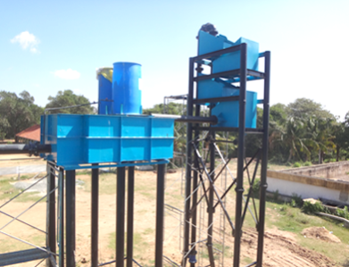 | 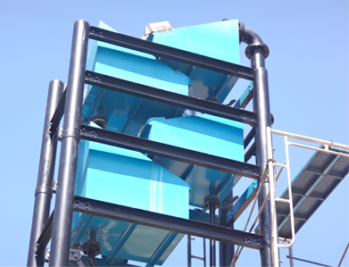 |
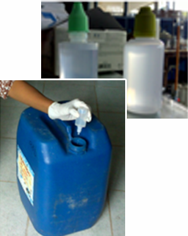Around the world there are number of household water treatment techniques in practice. In South Asia Plain sedimentation, cloth filter, boiling, solar disinfection and chlorination are the five most commonly used HWTS options. Boiling, cloth filter and plain sedimentation are widely used traditional household water treatment options in Sri Lanka. Solar disinfection is used by few households.
The disinfection of drinking water and municipal wastewater provides critical public health protection. Disinfection destroys bacteria and viruses, helping to protect ecosystems and prevent the spread of waterborne disease such as cholera, typhoid, dysentery and hepatitis ‘A’.
The main objective of this research was to produce commercially available liquid chlorine [Sodium Hypochlorite (NaOCl)] disinfectant for household water treatment and for emergencies in Sri Lanka. Thereby reduce the mortality & mobility of water borne disease.
Research & Development section has made a household disinfectant solution (NaOCl). As an initial step, Research & Development Section has planned to conduct a field survey for households to get their perception on pilot basis. The survey will be conducted among, who take only well water for drinking purposes.
Around the world there are number of household water treatment techniques in practice. In South Asia Plain sedimentation, cloth filter, boiling, solar disinfection and chlorination are the five most commonly used HWTS options. Boiling, cloth filter and plain sedimentation are widely used traditional household water treatment options in Sri Lanka. Solar disinfection is used by few households.
The disinfection of drinking water and municipal wastewater provides critical public health protection. Disinfection destroys bacteria and viruses, helping to protect ecosystems and prevent the spread of waterborne disease such as cholera, typhoid, dysentery and hepatitis ‘A’.
The main objective of this research was to produce commercially available liquid chlorine [Sodium Hypochlorite (NaOCl)] disinfectant for household water treatment and for emergencies in Sri Lanka. Thereby reduce the mortality & mobility of water borne disease.
Research & Development section has made a household disinfectant solution (NaOCl). As an initial step, Research & Development Section has planned to conduct a field survey for households to get their perception on pilot basis. The survey will be conducted among, who take only well water for drinking purposes.
| 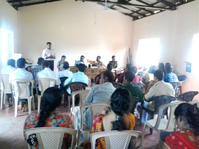 | 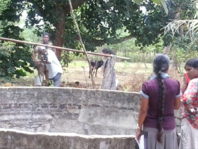 | 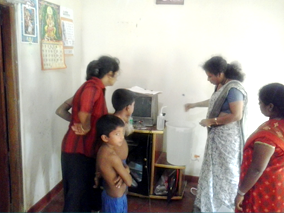 |
Provision of Safe Water for Drinking and Cooking Purpose for the Chronic Kidney Disease Affected in Polpithigama
Chronic Kidney Disease of unknown etiology (CKDu) has been prevalent in the North Western Province of Sri Lanka over the past decade or so. According to Health Ministry, in certain areas of this province fairly large number of population is affected by KDu inclusive of children.
At present, few pockets of the identified CKDu areas are not covered under NWSDB pipe born water supply, but those areas are covered by piped water supply systems provided by NGO’s and CWSSP. These systems supply almost untreated water from groundwater source such as dug wells & tube well.
This study covers the water supply provided by NGOs’ to around 500 families from 30 dug wells, 4 tube wells and one spring.
The aim of this research study is to study the water quality and social survey of the above mentioned 35 groundwater sources. The water quality tests include Physical, Chemical, Biological, Pesticides, Heavy metals, Arsenic and Sodium etc. At present the social survey is in progress.
| 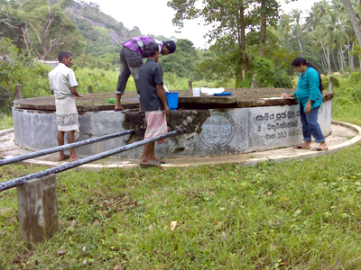 | 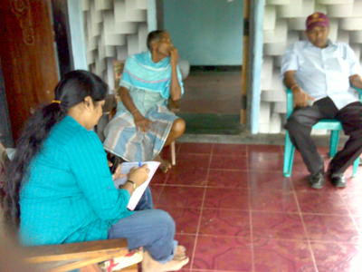 |
| Collecting water samples from ground water source | Social Survey |
Rainwater Harvesting to Mitigate Chronic Kidney Disease in North Central / Western provision
Chronic Kidney Disease of Unknown Etiology (CKDu) has been prevalent in the North Central and North Western provinces of Sri Lanka over the past decade. The number of cases has been steadily rising since the inception of the disease. In certain areas 5 to 10 % of the population of all age groups including children is affected. CKDu has grown to epidemic level in Kurunegala & Anuradhapura districts. Many research groups including a specialist team of WHO are involved in studies to identify the cause of this disease. Naturally available water in the district is not a major cause of disease according to WHO report (year 2013) but statistics reveal that treated water from NWSDB piped water schemes have very low contribution to it. Considering this situation NWSDB concludes that drinking safe water could control the disease.
As it is not practically possible to cover the entire district with pipe borne water, NWSDB proposes rain water harvesting and provision of treated water via bowser supplies could help the un served communities to avoid this deadly disease. With the lessons learnt from provision of ferro-cement tanks, NWSDB has initiated in year 2010 to provide 154 nos of a capacity of 2000L plastic tanks to identified dwellings of the patients in Polpithigama area. The houses in the respective areas were selected giving weightage for the following.
- Houses where there is a kidney patient
- Houses where there had been a fatality due to CKD
- Number of children below 18 years of age
- Willing to accept rain water for consumption
The Salient features of the facility provided include of a cloth filter, automatic first flush facility and introduction of a smaller capacity poly ethylene tank. The pilot project contains 154 rain water tanks and a follow up monitoring program scheduled to ensure the sustainability of the project.
| 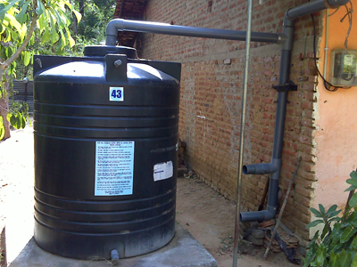 | 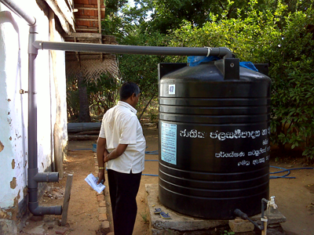 |
Girandurukotte
The following areas (Shown in Figure 1) were inspected by R&D section after the discussion with Manager (Bandarawela) and OIC (Girandurukotte) to provide bowser supply for CKD affected areas close to the Girandurukotte Water Supply Scheme (WSS).
- Haguranketha Yaya
- Theldeniyaya
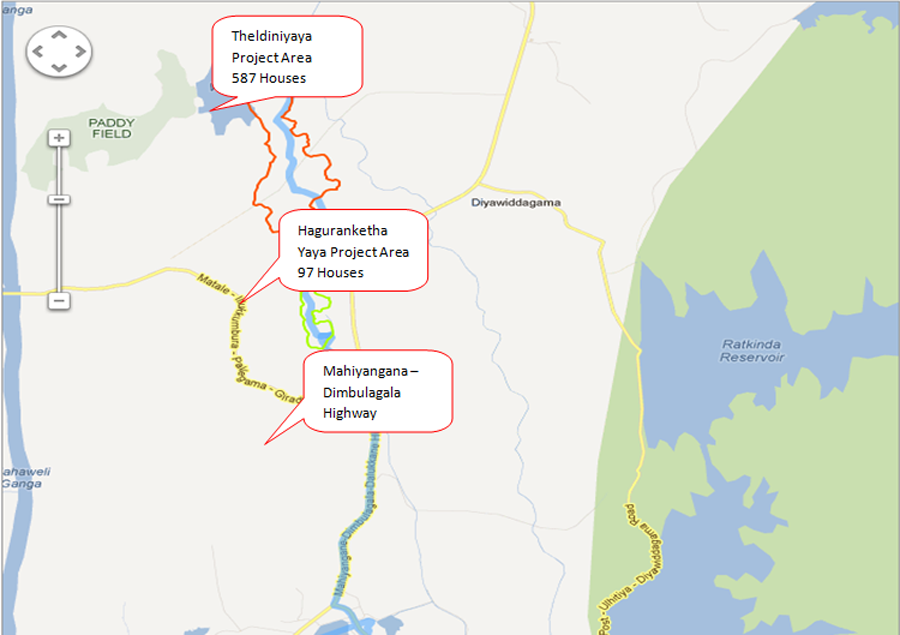
Figure 1
The Water Treatment Process includes Aeration, sedimentation and rapid sand filatration to purify the raw water. Further, the WSS was designed to cater 3200 house holds. However, NWSDB has provided 1800 connections at present under Gamidiriya programme in Girandurukotte area. Hence, OIC (Girandurukotte) has revealed that there is a possibility to distribute excess water trough bowser to other areas which are not covered by the existing water distribution network. Based on this the pilot project area Haguranketha Yaya village was selected. The details of PE storage tanks are as shown in Table1 and Figure 2 shows the placing of PE tank at site. |
 |
| Figure 2 |
| Project Area | No of Houses | Tank Capacity | No of Tanks | Coverage / Tank |
| Haguranketha Yaya | 97 | 1000L | 20 | 5 house hold |
*Theoretical tank filling frequency: 7 Days
The post survey was carried to investigate project performance and it revealed 87% of the total population (Figure 3) is adapted to the introduced system. Further, Figure 4 shows the percentage of the CKDu patient in the Haguranketha Yaya village
| 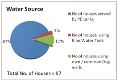 | 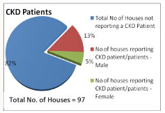 |
| Figure 3 | Figure 4 |
| 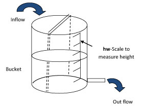 | 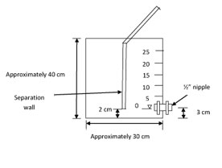 |
This is a simple flow control device which was constructed and tested to get required flow rate by adjusting the water height. Flow rates between 6 and 30 l/min can be used to measure accurately with this simple device equipped with 1/2” nipple.
Discharge through nipple was measured for different equilibrium heights of water. A graph was drawn according to the test results. Then for each equilibrium water height the theoretical discharge and actual discharge were calculated.
[Discharge (Theoretical)/Discharge (Actual)] = 0.64
| h (cm) | Volume (l) | Q Actual (l/min) | Q average(l/min) |
| 31.6 | 5.37 | 32.22 | 32.14 |
| 5.37 | 32.22 | ||
| 5.33 | 31.98 |
Practically measured discharge is shown above. Therefore from this device 30L/min flow can be obtained at 31.6 cm water height.
Similarly by adjusting height different flow can be measured using this device.
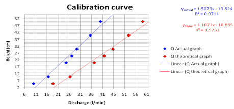
The graph of Height Vs Discharge for simple flow control device
If required flow = 0.5 L/S = 30L/min
Assuming discharge factor 0.64
30 = 0.64* Qth
Qth= 46.88 l/min
Using above theoretical graph
(40-30) /(52.85-45.77) = (40-h)/ (52.85-46.88)
1.41 =(40-h)/5.97
31.6 cm = h
Health impacts from long term use of fluoride bearing water have been summarized as;
| <0.5 mg/L | : | Dental caries |
| 0.5 - 1.0 mg/L | : | Promotes dental health |
| 1.0 – 4 mg/L | : | Dental fluorosis |
| >4 mg/L | : | Dental & Skeletal fluorosis |
| >10 mg/L | : | Crippling fluorosis |
In this research we will focus on removal of fluoride by a fluoride selective ion exchange resin. The fluoride selective ion exchange resin is a chelating resin loaded with aluminum ions. In the lab scale this research is carried out it show success results.
| Fluoride concentration in feed water | : | 1.52 mg/L |
| pH | : | 7.43 |
| Flow rate | : | 100 mL/min |
|
In this trial a single ion exchange filter containing 200g of resin was used. A representative ion exchange curve is shown in figure 1. It can be concluded from the curve that the break through of fluoride at 1 ppm occurred after 18 L, which equal 3 hours of operation, the operating capacity of the ion exchange resin is therefore, about 4.68x10-5 grams of fluoride adsorbed per one gram of resin. |
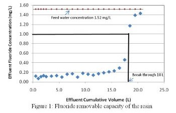 |
| Chlorine is added as final treatment step to disinfect and to provide residual chlorine to maintain this status. Removal of residual chlorine using activated carbon at the point of use helps to improve the taste and reduce health risks. About one ppm chlorine gas is injected into water to produce free chlorine that destroys and deactivates pathogenic and other organisms through oxidation. The residual free chlorine of 0.2ppm (WHO 2011) provides continued disinfection as water piped to homeowners, but another practical circumstance cause undesirable taste and odor. | 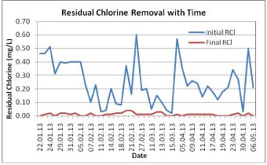 For four months interval this filter can effectively reduce residual chlorine. Research continuous further. |
Activated carbon dechlorinates drinking water through a chemisorption process whereby residual chlorine catalytically reacts with the carbon surface and is transformed into ionized hydrochloric acid. The process is increase pH levels typically found in drinking water. The reaction is as follows;
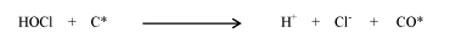C* and CO* represent activated carbon and the surface oxide on the carbon, respectively.
Tap the activated carbon filter to water line test for residual chlorine properties of filter and results as follows.
|
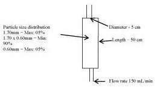 |
Research and Development Section has developed a demonstration model of Water Treatment plant, to understand the basic treatment process in Conventional Water treatment plant.
The processes indicate in this model is given as below.
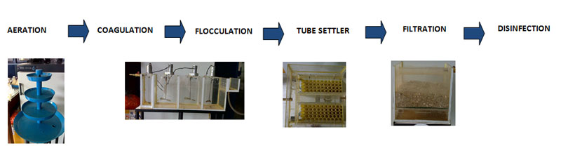
| Aeration | : | Water from raw water source, will contain little or no dissolved oxygen. Hence, oxygen is added here. Also this step removes dissolved gases such as CO2, H2S and Ammonia from water thus improving the taste. Also dissolved iron is oxidized |
| Coagulation | : | The water contains very small particles less than 1 μm (Colloidal solids). They cannot settle out of suspension naturally because of their smaller size and negative charge. Coagulants such as Alum{[Al2(SO4)3. 18H2O] – Hydrated Aluminium Sulphate} are added to neutralize and destabilize these particles to induce them to aggregate into bundles known as flocs. This flash mixing with Alum is done with correction of pH to around 6.8. Sometimes Lime is used for this pH correction. About 60 seconds is enough for this Flash mixing step. |
| Flocculation | : | The bundling of destabilized particles is termed flocculation which is based on particle collisions. Flocculation is done practically in three steps termed “Slow Mixing” which improves the chance of particle collisions. |
| Tube Settler | : | The flocs formed after flocculation are settleable and hence removed by settling in sedimentation tank. As the flocs settle, the clarified water at the surface overflows a simple weir on top to the filtration unit. Tube settler is one of the most efficient settling device. It needs only one fifth of land area compared to a plain sedimentation tank. |
| Filtration | : | After sedimentation, the remaining impurities in water are very fine solids. (<10 mg/L in concentration) and dissolved material. Some of these impurities are originally in the raw water, but some are formed during the coagulation process. The residual material is removed in the filtration process by passing settled water through a layer of fine sand. |
| Disinfection | : | Although the coagulation process can remove some viruses and filtration can remove bacteria up to certain extent, the finished water may still contains some pathogenic viruses and bacteria which need to be destroyed or kept at safe level. Hence chlorination is applied to disinfect the filtered water before distributing to the consumers. |